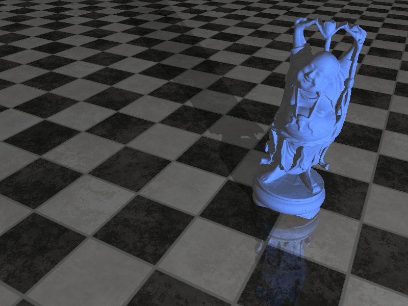

We have implemented a ray tracer utilizing bounding volume hierarchies (BVH) and packetized traversal on the CPU. The BVH is built using the surface area heuristic (SAH) to produce BVHs that are inexpensive to traverse. On Monday we plan to demonstrate our ray tracer rendering detailed scenes at interactive or near-interactive rates.
Ray tracing is a rendering technique that calculates the color displayed by an image at each pixel by "tracing" a ray through the scene starting at that pixel. Since a ray may intersect with multiple objects in the scene, finding the point of closest intersection is a search problem which can be highly computation-intensive given the detail in typical images.
Naive algorithms for ray tracing can easily take many hours to traverse simple scenes, and even highly-efficient ray tracers can take long lengths of time given a high degree of desired realism. Our goal was to implement a ray tracer that provides a reasonable level of realistic detail at an interactive frame rate.
The ray tracing problem is embarassingly parallel in the sense that all rays are independent of one another, but the coherence of ray paths quickly breaks down within a typical scene and the resulting divergence can prove problematic for data parallel hardware such as GPUs. In light of this, we chose to do our primary implementation on multi-core CPUs, where we can take advantage of separate cores that are able to gracefully handle branc instructions.
There are two major axes of our implementation: a bounding volume hiearchy and packetization.
The creation of the BVH acceleration structure is done as a pre-processing step before any rays are traced through the scene. The structure creates a bounding box around an entire model (containing arbitrary numbers of triangles) and recursively sub-partitions the interior triangles into smaller bounding boxes. The actual triangles are referenced at the leaf nodes, with each leaf holding up to a pre-set number of triangles, which in our case is set to optimize for the SIMD width of our processors.
At each node of the tree, the choice of how to partition the interior triangles into to child nodes is done by evaluating the Surface Area Heuristic, which roughly tries to balance the surface area of the triangles in each child node of the parent BVH node.
Since we restricted ourselves to static scenes for the purposes of this project, we only have to build the BVH once.
Packetization involves evaluating multiple rays at once. The normal ray tracing algorithm loops over all pixels on the screen, and for each pixel loops over all scene objects to find intersections. By packetizing, we group a block of screen pixels together and trace a frustum through the scene rather than individual pixels. If the frustum does not intersect an object, then none of its interior rays will either, and the ray tracer can safely skip those rays in its computations.
In addition, each packet can be easily mapped over a CPU core for high level parallelism by putting all packets into a shared work queue. This seems to have the additional benefit of slightly reducing contention compared to individual pixels because of the larger compute time for each work item.
We are exploring several avenues of parallelizing when it comes to packet based traversal. The first step in ray tracing is to traverse the BVH and determine which rays probably intersect which pixels. After a frustum test is used to determine that the packet intersects the BVH, intersection tests of each node can be done in SIMD across the whole packet, to determine which rays in the packet intersect that node of the BVH. As the packet descends the BVH, doing intersection tests in SIMD, rays that don't intersect are removed from the packet, until there is a list of rays and the triangles in the BVH they each intersect.
At this point, the rays will reflect, and may not be a coherent packet any more. After that happens, it is hard to use SIMD rays that are no longer going in similar directions, so the rest of the computation is done using only a single lane of each core.
This approach should decrease the amount of time spent doing intersection tests, and push a little more work towards the part of the code that actually computes the value of each pixel.
The Happy Buddha image below contains over a million triangles and rendered in less than a second on our laptops (disregarding BVH build time). We are continuing to iterate and hope to have this down considerably further by Monday as there are still a number of optimizations to make. We anticipate a render rate of a few frames per second on scenes like this one.
I. Wald, S. Boulos, and P. Shirley, Ray Tracing Deformable Scenes Using Dynamic Bounding Volume Hierarchies, 2007
I. Wald et al, State of the Art in Ray Tracing Animated Scenes, 2007
I. Wald, T. Ize, and S. Parker, Fast, Parallel, and Asynchronous Construction of BVHs for Ray Tracing Animated Scenes, 2007
Special thanks to Nico Feltman.
We pair-programmed a good deal of the project and did roughly equal work. Adam handled more of the BVH construction and Nathan more of the packetization.